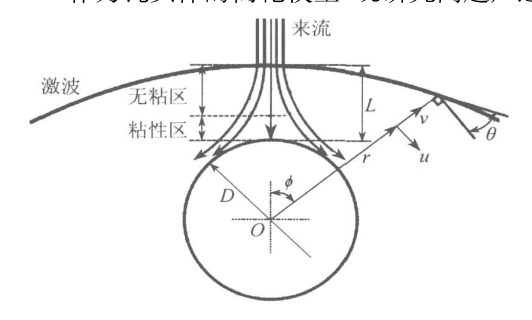
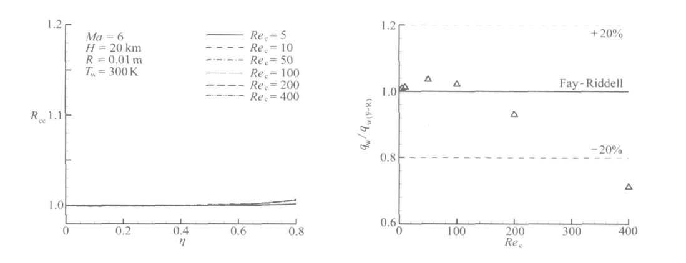
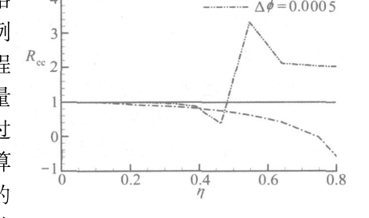

01中文摘要
本文建立高超声速飞行器前驻点沿驻点线的准一维流简化模型，将头激波后流场分为无粘区和近壁粘性区，从 Navier-Stokes 方程组出发，利用流场对称性和量级分析推导驻点邻域的简化控制方程组，并证明该流动具有边界层型特征。基于该方程组，作者给出计算结果应满足的壁面驻点相容关系以及沿驻点线的能量相容关系，作为判断热流 CFD 计算是否准确的物理准则。最后通过算例验证这些相容关系作为热流计算可靠性判据的有效性，指出网格雷诺数过大时热流结果不可信。
原始摘要（英文/原文）
通过建立高超声速飞行器前驻点处沿驻点线的准一维流简化模型,再将头激波后流场分为无粘区和近壁粘性区,然后从N-S方程组出发,利用流场对称性和量级分析方法,最终推导出驻点邻域简化控制方程组,并证明了其流动具有边界层型特征.在此基础上,根据该控制方程组,给出了计算结果应满足的壁面驻点以及沿驻点线的相容关系,成为热流CFD计算准确与否应遵循的物理准则.最后通过算例验证了物理准则作为热流CFD计算可靠性判据的正确性.
02阅读说明
类型：理论分析＋数值验证（中文期刊论文，《应用数学和力学》2010, 31(7):801–811，共11页）。材料为11页全文文本与7个抓取图件；PDF文本层公式严重乱码，已用PDF第803–806页逐式核对式(2)–(16)，第810页核对附录B。信息完整度中等偏上：来流条件、两组网格算例、壁面相容关系偏差表与相对不确定度表齐全；网格总量、y+、总温总压、边界层状态以及切向网格宽度的单位未给出。页码均指期刊页脚801–811。 文章类型：期刊
03一句话核心与三句话摘要
由N-S方程导出驻点邻域方程组，提出壁面与沿驻点线相容关系，作为热流CFD可靠性判据。
- 驻点热流对网格与格式极为敏感，工程上缺少独立于算例的可靠性判据，作者主张从流动物理导出相容关系来检验CFD结果。 AI概括
- 从N-S方程出发，对二维圆柱驻点线作准一维简化并用量级分析得到驻点邻域方程组，导出壁面相容关系(11a)(11b)(11d)与沿驻点线关系Rcc=1（式16）。 原文明确
- M=6、H=20 km、R=0.01 m、Tw=300 K的两组网格算例中，Re_c≤200、切向宽度0.1–0.025时准则满足且相对不确定度<20%，Re_c=400与切向宽度0.001/0.0005时准则破坏、不确定度达95%–440%。 AI概括
04核心内容清单
| 要点 | 类型 | 重要性 | 原文依据 | 属性 |
|---|---|---|---|---|
| 建立沿驻点线的准一维流管模型，把激波后流场分为无粘外层与近壁粘性层，并给出极坐标与无量纲化定义（式2）。 | 理论模型 | A | p802–803，第1–2节，图1，式(2) | 原文明确 |
| 驻点线邻域切向速度呈线性分布，以∂u/∂φ代替u可消除切向动量方程的0/0极限；流动变量对φ变化不大，可作准一维简化。 | 理论推导 | A | p803，第2节，式(3)(4) | 原文明确 |
| 量级分析（r=O(ε)、v=O(ε)、ε=Re^(−1/2)）把方程组化为(9)：法向压力梯度为零、粘性耗散可略，流动呈边界层型。 | 理论推导 | A | p804–805，第3.2节，式(8)(9) | 原文明确 |
| 壁面相容关系(11a)(11b)(11d)与沿驻点线相容关系(16)（Rcc=1）共同构成热流CFD的物理准则。 | 核心结论 | A | p805–806，第4节，式(11)(16) | 原文明确 |
| 式(11c)只要求切向网格宽度远大于法向高度（小高宽比），属于网格形状条件，未列为物理准则。 | 判据取舍 | B | p805，第4节；p810，附录B | 原文明确 |
| Re_c由5增至400时，壁面能量相容关系偏差由0.0023增至0.750，接近一个量级；连续性、法向动量偏差基本不变。 | 数值结果 | A | p807，表1 | 原文明确 |
| Re_c=400算例相对不确定度超过20%，判为不可靠；Re_c≤200算例低于20%，判为可靠，与物理准则结论一致。 | 验证结果 | A | p807，图3；p807–808 | 原文明确 |
| 切向宽度0.001与0.0005（大网格高宽比）使∂v/∂r达2.0、∂p/∂r达0.23/0.40，沿驻点线Rcc偏差超过一个量级。 | 数值结果 | A | p808，表2，图4 | 原文明确 |
| 上述两组大高宽比算例的相对不确定度为0.95与4.4（即95%与440%），流场与温度场被判定为不正确。 | 验证结果 | A | p808，表3 | 原文明确 |
| 前3组切向宽度0.1/0.05/0.025时壁面各偏差在0.1量级及以下，相对不确定度0.0081/0.011/0.033。 | 数值结果 | A | p808，表2、表3 | 原文明确 |
| 由切向动量方程截断误差量级估计得Δr=ε(Δφ)²，说明边界层内必须采用很小的高宽比网格。 | 理论推导 | B | p810，附录B，式(B1)–(B4) | 原文明确 |
| 驻点邻域方程组与Fay-Riddell边界层方程形式不同，但忽略粘性耗散后结果相同，二者互相验证。 | 论证 | B | p805，第3.2节 | 原文明确 |
05引言：研究问题与领域缺口
p801–802指出，钝头体前驻点热流是流场梯度量，热流CFD结果随网格与格式可差一个量级（引言引Klopfer与Yee、Hoffmann、Lee与Rho等工作），而热流恰恰关心局部区域，气动力收敛性不能代替气动热可靠性。作者回顾：Klopfer与Yee（1988）要求Re_c小于3，Hoffmann等提出壁面网格改进，Lee与Rho（1998）比较AUSM+格式，Zoby（2004）主张从流动物理寻找判据；经典驻点理论（Lees、Fay-Riddell、Van Dyke高阶边界层）均假定壁面附近沿用边界层方程，只揭示切向流动特征，且“驻点附近是否存在边界层仍然是个疑问”。缺口是需要一个不依赖算例、由流动对称性与守恒律导出的判据。目标是借鉴Belouaggadia等（2008）沿驻点线准一维流管模型并加以扩展，把激波后流场分为无粘外层与近壁粘性层，从N-S方程导出驻点邻域控制方程，得到壁面与沿驻点线相容关系，并用CFD算例检验其判别能力（p802）。
06流动条件与几何构型
| 项目 | 数值/描述 | 依据 | 备注 |
|---|---|---|---|
| 来流马赫数 M∞ | 6 | p807，第5节 | 两组算例共用 |
| 飞行高度 H | 20 km | p807，第5节 | 据此确定来流静参数，具体静温静压文中未提及 |
| 圆柱半径 R | 0.01 m | p807，第5节 | 二维圆柱简化模型 |
| 壁面温度 Tw | 300 K | p807，第5节 | 等温壁，未给出壁面热流条件 |
| 工质与气体模型 | 完全气体，e=cvT、h=cpT、cp/cv=γ 且 γ 为常数（数值未给出） | p803，第3.1节 | 比热比、Pr 数值文中未提及 |
| 第1组：Re_c | 5、10、50、100、200、400（6种） | p807，表1 | 切向网格分布相同 |
| 第1组：切向网格分布 | 各算例相同（具体宽度文中未提及） | p807，第5节 | |
| 第2组：切向网格宽度 | 0.1、0.05、0.025、0.001、0.0005（5种） | p808，表2、表3 | 单位或无量纲基准文中未注明 |
| 第2组：Re_c | 各算例相同（具体数值文中未提及） | p807，第5节 | |
| Re_c定义 | Re_c = ρ∞ u∞ n / μ∞，n 为壁面驻点第1层网格法向高度 | p802，式(1) | 与网格法向高度成正比 |
| 数值格式 | 有限体积法；无粘项 AUSM+UP；粘性项二阶中心差分 | p806，第5节 | 未给限制器、时间推进与收敛标准 |
| 边界层状态 | 文中未提及 | — | 层流或湍流未说明 |
| 总温总压 | 文中未提及 | — |
07核心现象与关键参数
| 参数 | 定义 | 数值 | 关系/说明 | 依据 |
|---|---|---|---|---|
| Re_c | 以壁面驻点第一层网格法向高度为特征长度的网格Reynolds数 | 5–400（6种） | Re_c=ρ∞u∞n/μ∞，正比于第1层网格高度 | p802，式(1) |
| Rcc | 沿驻点线能量方程对流项与导热项之比的无量纲组合 | 理论值1.0；算例中η≤0.8范围内接近1 | Rcc=RePr(γ−1)ρv(∂T/∂r)/[∂(k∂T/∂r)/∂r] | p806，式(16) |
| 绝对不确定度 | 计算热流与Fay-Riddell理论热流之差 | 随Re_c增大而增大，具体数值以图3给出 | qw − qw(F-R) | p807，图3题注 |
| 相对不确定度 | 绝对不确定度与理论值之比 | 第2组：0.0081、0.011、0.033、0.95、4.4 | (qw − qw(F-R))/qw(F-R) | p808，表3 |
| 壁面能量相容关系偏差 | 壁面处∂(k∂T/∂r)/∂r的无量纲值，理论值为0 | 0.0023–0.750（随Re_c） | 偏差为0表示满足式(11d) | p807，表1 |
| 壁面连续性偏差 ∂v/∂r | 壁面处法向速度梯度无量纲值，理论值为0 | 0.025–2.0 | 偏差为0表示满足式(11a) | p807–808，表1、表2 |
| ε | 粘性层无量纲厚度小参数 | O(Re^(−1/2)) | r=O(ε)，v=O(ε) | p804，第3.2节 |
| 网格高宽比条件 | 由切向动量方程截断误差量级一致得到的法向与切向步长关系 | Δr=ε(Δφ)² | ε为小量，故需很小的高宽比 | p810，式(B4) |
| 激波脱体距离 L 与直径 D | 流管长度尺度与圆柱直径，用于无量纲化 | L无量纲值为2L/D；D具体值文中未提及 | r=(2r/D)−1，壁面为0、激波后为1 | p803，式(2) |
08方法与数据
理论部分（第1–3节，p802–805）：以高超声速均匀来流绕二维圆柱为简化模型，取L为激波脱体距离、D为直径，建立极坐标(r,φ)，把驻点线邻域视为无穷薄流管。对极坐标N-S方程组（式5，含应力分量A1–A3、Stokes假设λ=−2μ/3）按式(2)无量纲化，利用驻点线对称性（v、ρ、T对φ导数为零）与切向速度线性分布u=(∂u/∂φ)φ，以∂u/∂φ代替u，得到准一维方程组(6)（式6c中的切向压力梯度由Newton碰撞理论为常数，见式7）。再用粘性层厚度ε=O(Re^(−1/2))作量级分析得驻点邻域方程组(9)。数值部分（第5节，p806–808）：有限体积法，无粘项AUSM+UP格式，粘性项二阶中心差分；固定来流M=6、飞行高度H=20 km、圆柱半径R=0.01 m、壁温Tw=300 K，第1组取6种Re_c=5/10/50/100/200/400且切向网格相同，第2组取5种切向网格宽度0.1/0.05/0.025/0.001/0.0005且Re_c相同。判据检验方式：把∂v/∂r、∂p/∂r、∂(k∂T/∂r)/∂r的无量纲偏差与理论值0比较，把Rcc与理论值1比较；可靠性另用与Fay-Riddell公式的绝对/相对不确定度独立标定，相对不确定度超过20%视为不可信。
| 项目 | 内容 | 依据 | 备注 |
|---|---|---|---|
| 研究类型 | 理论推导（N-S方程量级分析）＋CFD算例验证 | p801摘要；p802–808 | |
| 几何模型 | 高超声速均匀来流绕二维圆柱，驻点线为对称轴 | p802，第1节，图1 | 对称性用于消去φ导数 |
| 控制方程处理 | 极坐标N-S方程→无量纲化→对称性与准一维假设→量级分析 | p803–805，第3节，式(5)–(9) | 应力项用Stokes假设λ=−2μ/3 |
| 数值方法 | 有限体积法，AUSM+UP无粘通量，二阶中心差分粘性项 | p806，第5节 | 网格量、y+、收敛判据文中未提及 |
| 验证基准 | 与Fay-Riddell公式理论解对比，定义绝对与相对不确定度 | p806–807，第5节 | 相对不确定度超过20%判为不可信 |
| 算例组1 | 固定切向网格，变化Re_c=5–400（6种） | p807，表1、图2、图3 | 考察法向第1层网格高度效应 |
| 算例组2 | 固定Re_c，变化切向网格宽度0.1–0.0005（5种） | p808，表2、表3、图4 | 考察网格高宽比效应 |
| 判据检验量 | ∂v/∂r、∂p/∂r、∂(k∂T/∂r)/∂r（壁面）与Rcc（沿驻点线） | p807–808，表1–表3，图2–图4 | 理论值分别为0与1 |
| 误差来源控制 | 仅改变网格，格式固定为AUSM+UP加二阶中心差分 | p806，第5节 | 作者明确只讨论网格影响 |
09核心推导与公式
把驻点线邻域视为无穷薄流管：外层按准一维无粘流处理，内层直接从N-S方程出发，用驻点线对称性和粘性层厚度量级ε=Re^(−1/2)消去次要项，得到边界层型的驻点邻域方程组，再由壁面条件与沿驻点线条件导出偏差应为0或1的相容关系。
关键假设
- 定常、二维平面（无限长圆柱）高超声速绕流，驻点线为对称轴
- 完全气体，γ、cp、Pr为常数，满足Stokes假设λ=−2μ/3
- 激波后沿驻点线分为无粘外层与近壁粘性层，外层可用准一维流管近似
- 大Reynolds数，粘性层无量纲厚度为O(Re^(−1/2))的小参数ε
- 驻点线邻域切向速度线性分布 u=(∂u/∂φ)φ，流动变量沿φ变化可忽略
- 壁面无滑移、无穿透；未考虑湍流、化学与热非平衡
推导过程
以激波脱体距离L和圆柱直径D定义流管，r在壁面为0、激波后为1；用滞止参数与来流速度无量纲化，并把滞止焓取为来流动能。
驻点线上v、ρ、T对φ的导数为零；切向速度在驻点线上为零，切向动量方程为0/0型极限，不能简单忽略，故以∂u/∂φ代替u作为流动变量，并利用∂u/∂φ沿φ为常数。
把极坐标N-S方程（式5）按式(2)无量纲化，应力分量由式(A1)–(A3)给出并取Stokes假设λ=−2μ/3；利用∂v/∂φ=0与准一维假设去掉φ相关项得方程组(6)。式(6c)中的切向压力梯度由Newton碰撞理论为常数（式7），故方程仍为常微分方程。
粘性层厚度取小参数ε=O(Re^(−1/2))；由连续性方程得v=O(ε)。略去小量后法向动量给出压力沿法向不变，能量方程中粘性耗散项被略去，方程组化为(9a)–(9d)，能量方程只剩对流、压缩功与热传导三项平衡。
由无滑移无穿透条件，连续性方程化为∂v/∂r=0，法向动量仍为∂p/∂r=0，能量方程化为纯导热为零；切向动量退化为切向压力梯度与粘性力两项平衡，只要求网格切向宽度远大于法向高度，故不列为判据。
压力沿驻点线为常数，完全气体状态方程化为ρT=1；用连续性方程把∂v/∂r+L∂u/∂φ写成−(v/ρ)∂ρ/∂r，再利用ρT=1把它化为ρv∂T/∂r，于是压缩功与对流项相差常数倍并可合并，能量方程化为式(15)，整理即得Rcc=1。
对切向动量方程(9c)作截断误差分析，要求法向与切向截断误差同量级（R1/R2=O(1)），得到Δr=ε(Δφ)²；因ε为小量，边界层内必须采用很小的高宽比网格才能分辨边界层流动。
适用边界：推导限于定常、二维圆柱、完全气体、常γ与大Reynolds数；外层用准一维无粘流管近似，未计化学与热非平衡、湍流及壁面曲率高阶效应。判据只判别计算是否可靠，不给出热流真值；验证只覆盖M=6、R=0.01 m、Tw=300 K与网格变化，未检验格式效应。
10结果：主要发现与关键证据
表1（p807，变化Re_c）：连续性偏差∂v/∂r为0.045–0.094，法向动量偏差∂p/∂r为0.0090–0.052，对Re_c不敏感；壁面能量偏差∂(k∂T/∂r)/∂r由Re_c=5时的0.0023增至Re_c=200时的0.140，Re_c=400时突增至0.750（近一个量级），据此判定Re_c=400的热流计算不可靠、Re_c≤200可靠（p807–808）。图2（p807）显示6个Re_c算例沿驻点线均较好满足式(16)（Rcc接近1，横坐标η只取到0.8）。图3（p807）给出相对不确定度：Re_c≤200小于20%，Re_c=400超过20%，与准则判断一致。表2、图4、表3（p808，变化切向网格宽度）：前3组宽度0.1/0.05/0.025的壁面各偏差在0.1量级及以下、Rcc满足较好、相对不确定度为0.0081/0.011/0.033；后两组0.001/0.0005的∂v/∂r均达2.0、∂p/∂r为0.23/0.40，沿驻点线Rcc与理论值最大偏差超过一个量级，相对不确定度为0.95/4.4，判定流场与温度场不正确、热流不可靠。作者指出能量方程直接决定热流，故以能量相容关系为主要判据，连续性、法向动量关系作辅助（p808）。
| 发现 | 证据 | 证据类型 | 强度 | 位置 | 属性 |
|---|---|---|---|---|---|
| 壁面能量相容关系偏差随Re_c单调增大，Re_c=400时达0.750，接近一个量级，判为不满足。 | 表1：Re_c=5/10/50/100/200/400对应0.0023/0.0082/0.016/0.093/0.140/0.750 | 数值表格 | 强 | p807，表1 | 原文明确 |
| 连续性与法向动量相容关系对Re_c不敏感，无法单独用于判别法向网格是否足够。 | 表1中∂v/∂r为0.045–0.094，∂p/∂r为0.0090–0.052，跨两个数量级Re_c无明显趋势 | 数值表格 | 中 | p807，表1 | 原文明确 |
| 以Fay-Riddell理论解为基准的相对不确定度在Re_c=400时超过20%，与壁面能量准则的判断一致。 | 图3：Re_c≤200相对不确定度小于20%，Re_c=400超过20% | 图形结果 | 强 | p807，图3 | 原文明确 |
| 沿驻点线相容关系Rcc=1对Re_c不敏感，6个Re_c算例均较好满足。 | 图2：各算例Rcc沿归一化边界层厚度η（只取到0.8）接近1 | 图形结果 | 中 | p807，图2 | 原文明确 |
| 切向网格宽度过小（0.001、0.0005）导致网格高宽比过大，壁面连续性与动量相容关系被严重破坏，沿驻点线能量关系偏差超过一个量级。 | 表2：∂v/∂r=2.0、∂p/∂r=0.23/0.40；图4：Rcc与理论值1最大偏差超过一个量级 | 数值表格与图形 | 强 | p808，表2、图4 | 原文明确 |
| 大高宽比算例的相对不确定度达0.95与4.4，证明其热流结果不可靠，与物理准则判断一致。 | 表3：宽度0.001与0.0005对应0.95、4.4；其余为0.0081–0.033 | 数值表格 | 强 | p808，表3 | 原文明确 |
| 边界层内网格高宽比需满足Δr=ε(Δφ)²，即切向宽度应远大于法向高度，才能准确模拟边界层型流动。 | 附录B截断误差量级分析式(B1)–(B4)，与第二组算例结果一致 | 理论推导 | 中 | p810，附录B；p808 | 原文明确 |
11机制解释与论证链
作者论证链为：前提——驻点热流由近壁温度剖面决定，温度剖面由能量方程控制；证据——壁面处速度为零，故对流项与压缩功项消失，能量方程退化为纯导热（11d），沿驻点线压力不变使ρT=1，压缩功与对流项可合并为单一对流项（15）；推论——若数值解满足这两条，说明其温度场没有虚假耗散、没有温度剖面峰值，具有边界层型结构，热流才可能准确；结论——把(11a)(11b)(11d)与(16)作为可靠性判据。网格方面，切向动量方程在壁面只剩压力梯度与粘性力平衡，其离散要求Δr=ε(Δφ)²，即切向网格必须远宽于法向；当切向网格过密（宽度0.001/0.0005）时高宽比过大，连续性、动量与能量关系同时被破坏，热流偏差达95%–440%。这一机制解释属AI概括，其组成要素（壁面无对流、ρT=1、Δr=ε(Δφ)²）见p805–806与p810。
12讨论：结论、贡献与局限
机制上，驻点热流由近壁温度剖面决定，而温度剖面受能量方程支配；壁面处对流与压缩功均为零，能量方程退化为纯导热（11d），沿驻点线则只剩对流与导热两项平衡（15）——若数值解满足这两条，说明未引入虚假耗散、温度剖面无峰值，热流才可能准确（p805–806）。切向动量在壁面退化为压力梯度与粘性力两项平衡（11c），它要求网格切向宽度远大于法向高度（附录B：Δr=ε(Δφ)²），属于网格形状条件而非流动物理判据，故未列入准则（p805、p810）。作者强调该判据只能判断可靠或不可靠，不能给出热流真值；其独立标定仍依赖Fay-Riddell理论解。文中还将所得方程组与Fay-Riddell边界层方程对比，认为驻点附近速度小、边界层内动能相对总焓可忽略，故边界层方程中粘性耗散项亦可略去，“殊途同归，结果相同”（p805）。局限在于仅验证网格效应、只用一个来流状态与一个圆柱半径，未讨论格式、湍流、化学非平衡的影响。
作者结论
作者结论有三点（p809，第6节）：(1) 建立沿驻点线准一维流动模型，把激波后流场分为无粘流与粘性层，基于N-S方程、对称性与量级分析导出驻点邻域控制方程组，与Fay-Riddell边界层解殊途同归；(2) 由此导出壁面驻点相容关系与沿驻点线相容关系，作为CFD计算的物理准则；(3) 通过大范围变动Re_c与切向网格宽度，比较准则满足程度并与CFD热流对比，验证该准则可作为驻点热流CFD计算可靠性的判据。作者强调判据用于判断结果可靠性而非给出真值。
主要贡献
- 提出不依赖具体格式与算例、由N-S方程与对称性导出的驻点热流CFD物理准则（式11a、11b、11d与式16）。
- 给出驻点邻域方程组(9)并证明其边界层型特征，说明粘性耗散在驻点线附近可忽略，与Fay-Riddell理论互相印证。
- 用两组网格算例（Re_c与切向宽度）把准则判断与Fay-Riddell相对不确定度独立对照，给出判据可用性的直接证据。
- 由截断误差分析给出边界层网格高宽比要求Δr=ε(Δφ)²，把式(11c)解释为网格形状条件。
局限与未解决问题
作者承认并自我限定的范围：只讨论网格影响（格式固定），判据只判别可靠性；模型为二维圆柱、完全气体、常γ、定常、大Re。AI识别的局限：单一来流状态（M=6、H=20 km、R=0.01 m、Tw=300 K），未覆盖不同钝头体形状、攻角、湍流、化学与热非平衡及壁面催化；未给出网格总量、y+与收敛标准，无法评估数值误差与准则偏差的耦合；相对不确定度20%阈值取自工程惯例，未给统计依据；沿驻点线Rcc在η趋近1处各项趋零，作者只取到0.8，接近外缘的判别能力未知。
13对高速流动与工程的意义
对高超声速气动热CFD的验证与确认提供了一种低成本自检手段：无需实验数据，仅检查壁面与沿驻点线的无量纲相容关系即可筛掉明显不可靠的热流解，可用于再入、前缘、钝头体热防护设计的网格设计与结果复核。方法上，把壁面能量偏差为零、Rcc=1作为验收指标，可移植到其他驻点类问题的网格敏感性研究。它不能回答热流绝对值是否准确，不能替代实验或高精度基准解，也未涉及SBLI等切向梯度主导的干扰区。
14核心图件



15可引用原文素材
| 原文短句 | 可支持的观点 | 位置 | 使用建议 |
|---|---|---|---|
| “形成检验ＣＦＤ计算的物理准则” | 论文的核心目标：建立独立判据 | p801，引言 | 用于说明研究动机，可直接引用 |
| “热流值依赖于网格以及格式的选取” | 热流CFD结果的不确定性来源 | p802，引言 | 作为问题背景引用 |
| “驻点附近是否存在边界层仍然是个疑问” | 经典驻点理论未解决沿驻点线结构 | p802，引言 | 说明本文从N-S方程出发的必要性 |
| “温度分布剖面不存在峰值” | 能量方程略去耗散后的边界层型特征 | p805，第3.2节 | 解释为何壁面能量关系可作为判据 |
| “壁面处不存在对流作用” | 壁面能量方程退化为纯导热 | p805，第4节 | 引用式(11d)的物理含义 |
| “沿驻点线能量方程不存在能量耗散” | 式(15)只含对流与导热 | p806，第4节 | 支撑Rcc=1判据 |
| “要求边界层内网格具有很小的高宽比” | Δr=ε(Δφ)²的工程含义 | p810，附录B | 用于网格设计建议 |
| “殊途同归，结果相同” | 本文方程组与Fay-Riddell边界层方程的一致性 | p805，第3.2节 | 说明理论推导的可信度 |
16最终核验
| 核验项 | 结论 |
|---|---|
| 仅基于全文 | 是。全部内容来自11页bundle文本、图注及PDF第803–806、810页的公式核对；未引入外部知识。 |
| A 级要点有依据 | 是。A级要点均可回查表1–表3、图2–图4与式(9)(11)(16)，数值逐项对应。 |
| 属性标注 | 是。three_sentence、core_points、findings均标注属性；机制整段标为AI概括并给出组成要素页码。 |
| 覆盖范围 | 是。bundle共413行已全部读完；IMRaD四节、conditions 13项、key_parameters 9项、methods 9项、findings 7条、quotes 8条、figures 3幅。 |
| 无编造 | 是。未编造页码、图号、公式与数据；网格总量、y+、总温总压、边界层状态、切向宽度单位等缺失项均写“文中未提及”。式(9d)因文本层乱码且版面过小未逐字转写，仅以文字描述其三项平衡。 |
需回原文确认
- 表1、表2中∂v/∂r、∂p/∂r、∂(k∂T/∂r)/∂r的无量纲参考量原文未明确，不同算例偏差值的可比性需回原文确认。
- 第2组算例固定的Re_c具体数值未给出，无法判断其法向分辨率是否足够。
- 切向网格宽度0.1–0.0005的单位或无量纲基准未说明，是否以D或L归一化需确认。
- 相对不确定度20%的阈值仅称工程惯例，未给统计或经验依据。
- 式(9c)、式(9d)中切向压力梯度项的系数受版面与文本层限制，建议回PDF原页逐符号核对。
- 判据在湍流边界层、化学非平衡、三维钝头体与有攻角工况下是否仍成立，文中未验证。
17关联文献
依据标签、板块、构型与作者脉络自动关联，可据此追踪同一问题的前序与后续工作。
18引用格式
选择期刊风格后复制；出处保留原刊名。BibTeX 可直接用于 LaTeX。
引用格式
李邦明, 鲍麟 & 童秉纲 2010 高超声速飞行器前驻点热流数值模拟的物理准则研究. 应用数学和力学 31 (7), 801–811. https://kns.cnki.net/KCMS/detail/detail.aspx?dbcode=CJFQ&dbname=CJFD2010&filename=YYSX201007006
PDF上传 PDF 并更新本页
本页缺少全文、摘要或图件时，可在浏览器本地补入 PDF。解析完全在本机完成，不上传网络；完成后会更新本页的 PDF 打开链接、原摘要、IMRaD 机器抽取、关键句与含图页面。复杂的公式语义与中文深度解读仍以原文和既有精读记录为准。